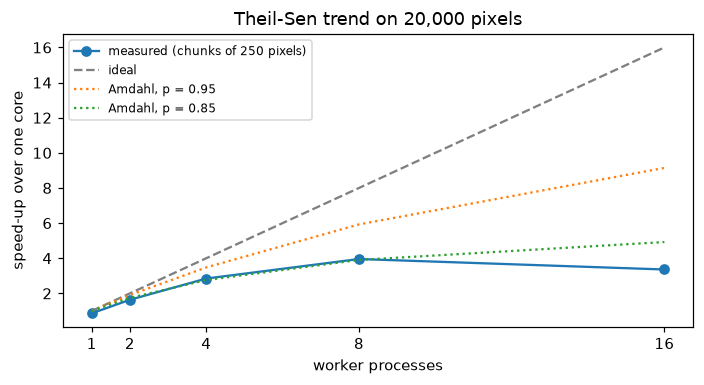
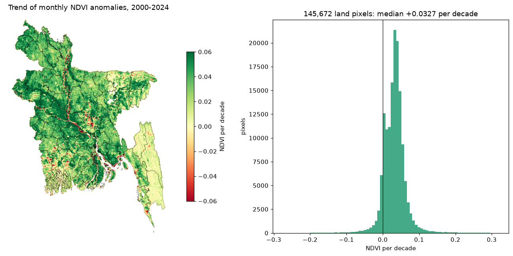

Earlier notebooks ran on one core. Cloud GIS work quickly outgrows that: a national time series has hundreds of images, a trend test compares every date with every other date in every pixel, and a continental mosaic reads terabytes from object storage. This notebook takes one real workload and scales it, measuring every step on this machine, so the effect of each technique is visible:
Where in Bangladesh is vegetation getting greener or browner? For every 1 km land pixel, estimate the trend of monthly NDVI anomalies from 25 years of MODIS images (2000-2024) with the Theil-Sen estimator.
The Theil-Sen slope is the median of the slopes between all pairs of dates. With about 300 months, that is about 44,000 slopes per pixel, and Bangladesh has about 146,000 land pixels: some 6.5 billion slopes. The calculation is simple, embarrassingly parallel and heavy, a typical cloud-scale job.
Learning objectives
Find where time goes (input/output, computation, memory bandwidth, network) before parallelising.
Build lazy, chunked pipelines with xarray and Dask, and choose chunk shapes for the access pattern (Zarr).
Scale a per-pixel computation across processes with Dask, and read the speed-up curve (Amdahl’s law).
Move the same kernel to a GPU with CuPy and compare cost and speed.
Read many cloud-hosted COGs in parallel, and measure when the network becomes the limit.
Split work into independent batch jobs (the pattern behind serverless and cloud batch services), and estimate what a run costs.
Data
Data
Source
MODIS 16-day NDVI, 1 km, Bangladesh, 2000-2024 (572 GeoTIFFs)
Install: pip install "dask[distributed]" xarray rioxarray zarr pystac-client, and cupy-cuda13x (or the CuPy build for your CUDA version) for Section 6. The GPU section is skipped on machines without a CUDA GPU.
Contents
Setup
Scaling in one page
The workload and its input: reading 572 images
Lazy pipelines with xarray and Dask
Chunks matter: the same cube in two Zarr layouts
Parallel computation with Dask
The same kernel on a GPU
The result: greening and browning of Bangladesh
Reading from the cloud in parallel
Batch jobs: the serverless pattern, and what a run costs
Summary and exercises
Setup
Installation. This notebook needs installation option 6 (every GeoLattice module): pip install "geolattice[all]". See “Installation options” in the GeoLattice README. It also uses psutil, which no GeoLattice option installs: pip install psutil.
Code
# Imports, quiet logging, paths, optional GPU, and MODIS inventory for scalable NDVI work%matplotlib inlineimport jsonimport osimport shutilimport subprocessimport sysimport timeimport warningsfrom concurrent.futures import ProcessPoolExecutor, ThreadPoolExecutorfrom pathlib import Pathwarnings.filterwarnings("ignore")import loggingfor name in ["distributed", "tornado", "tornado.application", "asyncio"]: logging.getLogger(name).setLevel(logging.CRITICAL) # keep cluster start/stop messages out of the outputimport numpy as npimport pandas as pdimport geopandas as gpdimport psutilimport rasteriofrom rasterio.features import geometry_maskfrom shapely.geometry import mappingimport matplotlib.pyplot as pltimport xarray as xrimport rioxarrayimport zarrimport daskimport dask.array as dafrom dask.distributed import Client, LocalClusterfrom osgeo import gdalimport geolatticeimport geolattice.web as web# Output folder, GPU probe, and list of MODIS GeoTIFF inputsgdal.UseExceptions()plt.rcParams.update({"figure.dpi": 110})DATA = Path("../../../Data")WEB = DATA /"00_shared"/"data_web_cloud_gis"MODIS = DATA /"00_shared"/"data_remote_sensing"/"MODIS"/"MODIS_NDVI_BD"OUT = WEB /"08_08_outputs"if OUT.exists(): shutil.rmtree(OUT)OUT.mkdir(parents=True)try:import cupy as cp GPU = cp.cuda.runtime.getDeviceCount() >0exceptException: cp, GPU =None, Falsefiles =sorted(MODIS.glob("ndvi_*.tif"), key=lambda p: (int(p.stem.split("_")[1]), int(p.stem.split("_")[2])))dates = pd.to_datetime([f"{p.stem.split('_')[1]}-{p.stem.split('_')[2]}"for p in files], format="%Y-%j")mem = psutil.virtual_memory()print(f"geolattice {geolattice.__version__} | Dask {dask.__version__} | xarray {xr.__version__} | Zarr {zarr.__version__}")print(f"CPU: {psutil.cpu_count(logical=False)} physical cores, {psutil.cpu_count()} logical | RAM {mem.total /1e9:.0f} GB")print("GPU:", cp.cuda.runtime.getDeviceProperties(0)["name"].decode() +f", {cp.cuda.Device(0).mem_info[1] /1e9:.0f} GB"if GPU else"none")print(f"MODIS: {len(files)} images, {dates[0].date()} to {dates[-1].date()}, {sum(f.stat().st_size for f in files) /1e6:.0f} MB on disk")
Concurrent requests, cloud-optimised formats, compute next to the data
Python’s GIL
Threads do not run Python code in parallel
Processes, or libraries that release the GIL (NumPy, GDAL)
Amdahl’s law: if a fraction p of the work can run in parallel, N workers give at most a speed-up of 1 / ((1 − p) + p / N). With p = 0.95, even infinite workers give 20×. Scaling therefore starts with measuring which part of the job takes the time.
Tools. On one machine: concurrent.futures, joblib, Dask (LocalCluster), CuPy and RAPIDS for GPUs. On clusters: Dask (Kubernetes, HPC, Coiled, Dask Gateway), Ray, Spark with Apache Sedona. As managed services: AWS Batch, Google Cloud Run jobs and Batch, Azure Batch, serverless functions (AWS Lambda, Cloud Functions), and platforms such as Planetary Computer, Earth Engine or openEO (Notebook 08_09).
The workload and its input: reading 572 images
Every run starts by reading the images. The 572 GeoTIFFs (LZW-compressed, 670 × 480 pixels) are read serially, with 16 threads, and with 8 processes.
Code
# Time a naive loop that opens all 572 MODIS NDVI GeoTIFFsdef read_one(path):with rasterio.open(path) as src:return src.read(1)timings = {}t0 = time.perf_counter(); cube = np.stack([read_one(f) for f in files]); timings["serial"] = time.perf_counter() - t0with ThreadPoolExecutor(16) as ex: t0 = time.perf_counter(); c2 = np.stack(list(ex.map(read_one, files))); timings["16 threads"] = time.perf_counter() - t0with ProcessPoolExecutor(8) as ex:list(ex.map(read_one, files[:8])) # start the workers first t0 = time.perf_counter(); c3 = np.stack(list(ex.map(read_one, files, chunksize=8))); timings["8 processes"] = time.perf_counter() - t0assert (c2 == cube).all() and (c3 == cube).all()with rasterio.open(files[0]) as src: crs, transform, shape = src.crs, src.transform, src.shapeprint(f"cube {cube.shape}, {cube.nbytes /1e6:.0f} MB in memory")pd.Series(timings, name="seconds").round(2).to_frame()
cube (572, 670, 480), 368 MB in memory
seconds
serial
3.28
16 threads
4.36
8 processes
0.66
Threads made reading slower (4.4 s against 3.3 s serially), while 8 processes made it five times faster (0.66 s). Decompressing the files releases Python’s GIL, but rasterio holds it while opening each file, so threads mostly queue for it. Separate processes each have their own interpreter and lock. Which kind of parallelism helps depends on the library, so measure it.
Lazy pipelines with xarray and Dask
The trend is computed on monthly anomalies: monthly mean NDVI minus that month’s long-term mean, which removes the seasonal cycle. With xarray and Dask the whole pipeline is written first and only evaluated at the end, chunk by chunk. Nothing is read until .compute() is called.
Code
# Lazy xarray/Dask monthly anomaly pipeline vs eager NumPy on the in-memory cubet0 = time.perf_counter()lazy = xr.concat([rioxarray.open_rasterio(f, chunks={"x": 240, "y": 335}).squeeze("band", drop=True) for f in files], dim=pd.Index(dates, name="time"))ndvi = (lazy.where(lazy !=0) /1e4).astype("float32") # 0 marks pixels outside Bangladeshmonthly = ndvi.resample(time="MS").mean()anomaly = monthly.groupby("time.month") - monthly.groupby("time.month").mean()build_s = time.perf_counter() - t0graph = anomaly.data.__dask_graph__()print(f"pipeline defined in {build_s:.1f} s: {len(graph):,} tasks, {anomaly.data.npartitions} output chunks, "f"shape {anomaly.shape}, nothing computed yet")# Compute the Dask graph with 8 threadswith dask.config.set(scheduler="threads", num_workers=8): t0 = time.perf_counter(); anom_dask = anomaly.compute(); dask_s = time.perf_counter() - t0# Same monthly anomalies with eager NumPy for a correctness checkt0 = time.perf_counter() # the same in eager NumPy, from the cube in memoryv = cube.astype("float32") /1e4v[cube ==0] = np.nanmonths = dates.to_period("M")codes, uniq = pd.factorize(months)mon = np.stack([np.nanmean(v[codes == k], axis=0) for k inrange(len(uniq))])moy = np.array([p.month for p in uniq])clim = np.stack([np.nanmean(mon[moy == m], axis=0) for m inrange(1, 13)])anom_np = mon - clim[moy -1]numpy_s = time.perf_counter() - t0print(f"Dask (read + compute, 8 threads): {dask_s:.1f} s | NumPy on the cube already in memory: {numpy_s:.1f} s")print("largest difference between the two:", float(np.nanmax(np.abs(anom_dask.values - anom_np))))
pipeline defined in 5.7 s: 31,165 tasks, 1196 output chunks, shape (299, 670, 480), nothing computed yet
Dask (read + compute, 8 threads): 13.4 s | NumPy on the cube already in memory: 1.6 s
largest difference between the two: 2.980232238769531e-07
The lazy pipeline is a graph of 31,165 tasks over 1,196 chunks, defined in 5.7 s without reading any pixel data (the time goes into opening the 572 file headers). Computing it with 8 threads took 13.4 s and matched NumPy to 3 × 10⁻⁷. NumPy on the cube already in memory took 1.6 s, so for data that fit in memory, eager NumPy wins. Dask’s value is elsewhere: the same code runs when the cube is 100 times larger than memory, or on a cluster. Its threaded reads also meet the rasterio GIL problem of Section 3, which a process-based scheduler avoids.
The trend needs only land pixels. We keep pixels that have NDVI on at least 90 % of dates and arrange the anomalies as a matrix of months × pixels: the input of everything that follows.
Code
# Keep land pixels with good coverage; save the anomaly matrix for trend jobsland = (cube !=0).mean(axis=0) >=0.9A = np.ascontiguousarray(anom_np[:, land]).astype("float32") # (months, pixels)n_months, n_pix = A.shapepairs = n_months * (n_months -1) //2np.save(OUT /"anomalies.npy", A)print(f"{n_pix:,} land pixels x {n_months} months; {pairs:,} pairs per pixel; "f"{pairs * n_pix /1e9:.1f} billion slopes in total; matrix {A.nbytes /1e6:.0f} MB")
145,672 land pixels x 299 months; 44,551 pairs per pixel; 6.5 billion slopes in total; matrix 174 MB
Chunks matter: the same cube in two Zarr layouts
Zarr stores an array as a grid of compressed chunks, each a separate object, which is how large arrays live in cloud storage. A reader fetches whole chunks, so the chunk shape decides which questions are cheap. We store the NDVI cube twice: chunked by date (one map per chunk, as images arrive) and chunked by space (all dates of a small tile per chunk, for time series), and time the two typical reads.
Code
# Zarr chunk layout trade-off: fast time series vs fast spatial sliceslayouts = {"by date (1 x 670 x 480)": (1, 670, 480), "by space (572 x 64 x 64)": (572, 64, 64)}rows = []row, col =198, 137# a pixel near Bografor name, chunks in layouts.items(): path = OUT /f"ndvi_{chunks[0]}x{chunks[1]}.zarr" t0 = time.perf_counter() z = zarr.create_array(store=str(path), shape=cube.shape, chunks=chunks, dtype="int16") z[:] = cube write_s = time.perf_counter() - t0 z = zarr.open_array(str(path), mode="r") t0 = time.perf_counter(); series = z[:, row, col]; series_ms = (time.perf_counter() - t0) *1000 t0 = time.perf_counter(); one_map = z[300]; map_ms = (time.perf_counter() - t0) *1000 n_files =sum(1for p in path.rglob("*") if p.is_file()) rows.append({"layout": name, "chunks (files)": n_files, "MB on disk": round(sum(p.stat().st_size for p in path.rglob('*') if p.is_file()) /1e6, 1),"write s": round(write_s, 1), "one pixel, all dates (ms)": round(series_ms, 1), "one date, all pixels (ms)": round(map_ms, 1)})assert (series == cube[:, row, col]).all() and (one_map == cube[300]).all()zarr_table = pd.DataFrame(rows).set_index("layout")zarr_table
chunks (files)
MB on disk
write s
one pixel, all dates (ms)
one date, all pixels (ms)
layout
by date (1 x 670 x 480)
573
151.3
0.4
181.9
1.1
by space (572 x 64 x 64)
61
151.6
0.2
5.5
41.3
Both stores hold the same 151 MB, but the costs of the two reads swap:
Read
Chunked by date
Chunked by space
One pixel through all 572 dates
182 ms (opens 572 chunks)
5.5 ms (opens one chunk)
One map on one date
1.1 ms
41 ms (opens all 61 chunks)
On object storage every chunk is a separate HTTP request, so the difference grows. Choose chunks for the dominant query: by date for map services (Notebook 08_05), by space for time-series APIs (Notebook 08_06), and compromise shapes or two copies when both matter.
Parallel computation with Dask
The kernel computes, for a block of pixels, the slopes between all pairs of months and takes their median. It is plain NumPy, so it runs unchanged on one core, in many processes, or (Section 7) on a GPU.
Code
# Theil-Sen per pixel (NDVI per decade); time a 20k-pixel serial baselinedef theil_sen(a, xp=np):"Median of all pairwise slopes for each column of a (months x pixels); NDVI per decade." n = a.shape[0] i, j = xp.triu_indices(n, 1) slopes = (a[j] - a[i]) / (j - i).astype("float32")[:, None]return (xp.nanmedian(slopes, axis=0) *120).astype("float32")SUB =20_000# a subset for the scaling experimentst0 = time.perf_counter()ref = np.concatenate([theil_sen(A[:, k:k +250]) for k inrange(0, SUB, 250)])serial_s = time.perf_counter() - t0print(f"serial: {serial_s:.1f} s for {SUB:,} pixels = {serial_s / SUB *1000:.2f} ms per pixel; "f"all {n_pix:,} pixels would take about {serial_s / SUB * n_pix:.0f} s")
serial: 13.6 s for 20,000 pixels = 0.68 ms per pixel; all 145,672 pixels would take about 99 s
Dask splits the pixels into chunks and runs one task per chunk on a cluster of worker processes (LocalCluster here; the same code runs on a cloud cluster by pointing Client at it). The input is read by each worker from a memory-mapped file instead of being copied into the task graph. We vary the number of workers and the chunk size on the 20,000-pixel subset.
Code
# Scale Theil-Sen with Dask LocalCluster; plot speed-up vs ideal and Amdahl curvesnp.save(OUT /"subset.npy", A[:, :SUB])rows = []for workers in [1, 2, 4, 8, 16]:with LocalCluster(n_workers=workers, threads_per_worker=1, processes=True, dashboard_address=None, silence_logs=logging.CRITICAL) as cluster, Client(cluster):for chunk in ([250, 1000] if workers in (8, 16) else [250]): x = da.from_array(np.load(OUT /"subset.npy", mmap_mode="r"), chunks=(n_months, chunk), asarray=True) t0 = time.perf_counter() res = x.map_blocks(theil_sen, drop_axis=0, dtype="float32").compute() sec = time.perf_counter() - t0assert np.allclose(res, ref, equal_nan=True) rows.append({"workers": workers, "chunk (pixels)": chunk, "tasks": SUB // chunk, "seconds": sec,"speed-up": serial_s / sec, "efficiency": serial_s / sec / workers})scaling = pd.DataFrame(rows)display(scaling.round(2))# Speed-up plot for 250-pixel chunksbest = scaling[scaling["chunk (pixels)"] ==250]fig, ax = plt.subplots(figsize=(6.5, 3.6))ax.plot(best.workers, best["speed-up"], "o-", label="measured (chunks of 250 pixels)")ax.plot(best.workers, best.workers, "--", color="grey", label="ideal")for p in [0.95, 0.85]: ax.plot(best.workers, 1/ ((1- p) + p / best.workers), ":", label=f"Amdahl, p = {p}")ax.set_xlabel("worker processes"); ax.set_ylabel("speed-up over one core"); ax.set_xticks(best.workers)ax.set_title("Theil-Sen trend on 20,000 pixels"); ax.legend(fontsize=8)plt.tight_layout(); plt.show()
workers
chunk (pixels)
tasks
seconds
speed-up
efficiency
0
1
250
80
15.79
0.86
0.86
1
2
250
80
8.33
1.64
0.82
2
4
250
80
4.79
2.84
0.71
3
8
250
80
3.45
3.96
0.49
4
8
1000
20
3.51
3.88
0.49
5
16
250
80
4.06
3.36
0.21
6
16
1000
20
3.52
3.88
0.24

On one core the kernel needs 0.68 ms per pixel, about 99 s for the whole country.
Scaling was good up to 4 workers (2.8×, efficiency 0.71), then flattened: 4.0× with 8 workers and 3.4-3.9× with 16.
One Dask worker was slower than plain serial code (efficiency 0.86): that is the cost of the scheduler.
Chunk size mattered little at 8 workers (3.5 s with chunks of 250 or 1,000 pixels).
The flat part is not Amdahl’s serial fraction; this kernel has almost none. Each task builds a temporary array of 44,551 slopes per pixel and then sorts it, so the cores compete for memory bandwidth. The laptop’s 16 physical cores also share caches and memory channels. Measured scaling, not the core count, tells you how many workers are worth paying for.
The same kernel on a GPU
CuPy mirrors NumPy’s interface on NVIDIA GPUs, so theil_sen(a, xp=cp) runs the same code there. Each block of pixels is copied to the GPU, processed, and the result copied back. We time the copy and the computation separately, then process all land pixels on the GPU and with Dask on the CPU.
Code
# Full-country Theil-Sen: optional GPU, then Dask with 8 workers; compare wall times# Optional CuPy path: measure copy + compute cost, then full-array timingif GPU: theil_sen(cp.asarray(A[:, :100]), xp=cp); cp.cuda.Device().synchronize() # compile kernels once rows = []for block in [1000, 2000, 4000]: blk = A[:, :block] t0 = time.perf_counter(); g = cp.asarray(blk); cp.cuda.Device().synchronize(); up = time.perf_counter() - t0 t0 = time.perf_counter(); r = theil_sen(g, xp=cp); cp.cuda.Device().synchronize(); comp = time.perf_counter() - t0 t0 = time.perf_counter(); r = r.get(); down = time.perf_counter() - t0 rows.append({"block (pixels)": block, "copy to GPU ms": up *1000, "compute ms": comp *1000, "copy back ms": down *1000,"ms per 1,000 pixels": (up + comp + down) / block *1e6,"GPU memory used GB": round((block * pairs *4*2) /1e9, 2)})assert np.allclose(r, ref[:block], equal_nan=True, atol=1e-5) display(pd.DataFrame(rows).round(1)) t0 = time.perf_counter() trend_gpu = np.concatenate([theil_sen(cp.asarray(A[:, k:k +2000]), xp=cp).get() for k inrange(0, n_pix, 2000)]) gpu_full = time.perf_counter() - t0print(f"GPU, all {n_pix:,} pixels: {gpu_full:.1f} s")else: trend_gpu, gpu_full =None, Noneprint("No CUDA GPU: skipped")# Dask LocalCluster over all land pixelswith LocalCluster(n_workers=8, threads_per_worker=1, processes=True, dashboard_address=None, silence_logs=logging.CRITICAL) as cluster, Client(cluster): x = da.from_array(np.load(OUT /"anomalies.npy", mmap_mode="r"), chunks=(n_months, 250), asarray=True) t0 = time.perf_counter() trend = x.map_blocks(theil_sen, drop_axis=0, dtype="float32").compute() dask_full = time.perf_counter() - t0print(f"Dask, 8 workers, all {n_pix:,} pixels: {dask_full:.1f} s")if GPU:print("largest difference GPU vs CPU:", float(np.nanmax(np.abs(trend_gpu - trend))))full_runs = pd.DataFrame({"seconds": {"1 core (estimated from the subset)": serial_s / SUB * n_pix,"Dask, 8 processes": dask_full, "GPU (CuPy)": gpu_full}})full_runs["speed-up"] = full_runs.seconds.iloc[0] / full_runs.secondsfull_runs.round(1)
block (pixels)
copy to GPU ms
compute ms
copy back ms
ms per 1,000 pixels
GPU memory used GB
0
1000
1.1
67.7
0.1
68.9
0.4
1
2000
2.2
135.5
0.1
68.9
0.7
2
4000
4.0
269.7
0.1
68.4
1.4
GPU, all 145,672 pixels: 9.9 s
Dask, 8 workers, all 145,672 pixels: 20.1 s
largest difference GPU vs CPU: 0.0
seconds
speed-up
1 core (estimated from the subset)
99.3
1.0
Dask, 8 processes
20.1
4.9
GPU (CuPy)
9.9
10.0
The GPU computed 1,000 pixels in about 68 ms against 680 ms on one CPU core, ten times faster. Copying to and from the GPU took only 1-4 ms per block, because each pixel’s 299 inputs produce 44,551 slopes on the GPU: much computation per byte transferred, the ideal case for a GPU. Blocks of 2,000 pixels used about 0.7 GB of the GPU’s 17 GB.
Whole country:
Run
Time
Speed-up
GPU
9.9 s
10.0×
Dask, 8 processes
20.1 s
4.9×
One core (estimated)
99.3 s
1×
GPU and CPU results are identical.
The result: greening and browning of Bangladesh
The trend values go back into the 1 km grid. Districts summarise them.
Code
# Write the trend GeoTIFF, summarize by district, and plot map + histogramtrend_map = np.full(shape, np.nan, dtype="float32")trend_map[land] = trendprofile =dict(driver="GTiff", width=shape[1], height=shape[0], count=1, dtype="float32", crs=crs, transform=transform, nodata=np.nan, compress="deflate", tiled=True, blockxsize=256, blockysize=256)with rasterio.open(OUT /"ndvi_anomaly_trend.tif", "w", **profile) as dst: dst.write(trend_map, 1) dst.set_band_description(1, "Theil-Sen slope of monthly NDVI anomalies, per decade, 2000-2024")# District-level summary of greening and browning sharesdistricts = gpd.read_file(WEB /"08_03_outputs"/"districts.gpkg").to_crs(crs)summary = []for name, geom inzip(districts.district, districts.geometry): inside = geometry_mask([mapping(geom)], out_shape=shape, transform=transform, invert=True) & land v = trend_map[inside] summary.append({"district": name, "pixels": int(inside.sum()), "median trend": float(np.nanmedian(v)),"share > +0.02": float((v >0.02).mean()), "share < -0.02": float((v <-0.02).mean())})summary = pd.DataFrame(summary).set_index("district")# Map and histogram of per-pixel anomaly trendsfig, ax = plt.subplots(1, 2, figsize=(13, 6), gridspec_kw={"width_ratios": [1.15, 1]})extent = [transform.c, transform.c + transform.a * shape[1], transform.f + transform.e * shape[0], transform.f]im = ax[0].imshow(trend_map, cmap="RdYlGn", vmin=-0.06, vmax=0.06, extent=extent)districts.boundary.plot(ax=ax[0], color="black", linewidth=0.2)ax[0].set_title("Trend of monthly NDVI anomalies, 2000-2024"); ax[0].set_axis_off()fig.colorbar(im, ax=ax[0], shrink=0.7, label="NDVI per decade")ax[1].hist(trend[np.isfinite(trend)], bins=80, color="#4a8")ax[1].axvline(0, color="k", lw=0.8); ax[1].set_xlabel("NDVI per decade"); ax[1].set_ylabel("pixels")ax[1].set_title(f"{n_pix:,} land pixels: median {np.nanmedian(trend):+.4f} per decade")plt.tight_layout(); plt.show()print(f"pixels greening by more than 0.02 per decade: {(trend >0.02).mean():.1%}; browning by more than 0.02: {(trend <-0.02).mean():.1%}")display(pd.concat([summary.nlargest(4, "median trend"), summary.nsmallest(4, "median trend")]).round(3))

pixels greening by more than 0.02 per decade: 69.5%; browning by more than 0.02: 2.6%
pixels
median trend
share > +0.02
share < -0.02
district
Pabna
2386
0.060
0.953
0.010
Nawabganj
1691
0.056
0.895
0.028
Natore
1903
0.051
0.960
0.011
Faridpur
2047
0.051
0.942
0.022
Bandarban
4602
0.004
0.021
0.002
Khagrachhari
2858
0.004
0.076
0.004
Rangamati
5774
0.007
0.076
0.014
Khulna
3600
0.012
0.331
0.049
Vegetation has become greener across most of Bangladesh: the median trend is +0.033 NDVI per decade, 69.5% of land pixels gained more than 0.02 per decade and only 2.6% lost that much.
Strongest greening: the north-west and centre-west (Pabna, Nawabganj, Natore, with medians of 0.05-0.06 per decade and over 89% of pixels greening) and Faridpur. These are areas of intensified, irrigated cropping.
Little change: the forested Chittagong Hill Tracts (Bandarban, Khagrachhari, Rangamati, medians 0.004-0.007), whose NDVI is already near its ceiling.
Weaker trends: the south-western coast (Khulna median 0.012, 4.9% browning).
Browning: concentrated along the Jamuna and Padma rivers, where channels and sandbars move, and in patches around the cities, consistent with urban growth.
This is a statistical trend in a vegetation index. Attributing it to irrigation, cropping intensity, urbanisation or salinity needs ancillary data.
Reading from the cloud in parallel
In the cloud the input is usually remote. A STAC search finds every Sentinel-2 scene of tile 18TVN (Syracuse, NY) with less than 20 % cloud between April and October 2025; we then read the same 12 km window of the red band from 12 of them, serially and with 4, 8 and 16 threads, counting the bytes GDAL downloads. GDAL’s Python bindings release the GIL during reads, so threads can overlap the waiting.
Code
# Remote COG window reads via STAC + GDAL /vsicurl; scale with thread pools# STAC search + GDAL config for range reads of remote COGsfrom pystac_client import Client as STACClientimport pyprojBOX = (-76.20, 43.00, -76.08, 43.08)OPTIONS =dict(GDAL_DISABLE_READDIR_ON_OPEN="EMPTY_DIR", AWS_NO_SIGN_REQUEST="YES", GDAL_HTTP_MULTIRANGE="YES", GDAL_HTTP_MERGE_CONSECUTIVE_RANGES="YES", CPL_VSIL_CURL_ALLOWED_EXTENSIONS=".tif", CPL_VSIL_NETWORK_STATS_ENABLED="YES", VSI_CACHE="FALSE", CPL_VSIL_CURL_NON_CACHED="/vsicurl/")for k, v in OPTIONS.items(): gdal.SetConfigOption(k, v)# Read one bbox window and return its meandef read_window(href):"Read the BOX window of a remote COG band with GDAL; return its mean." ds = gdal.Open("/vsicurl/"+ href) gt = ds.GetGeoTransform() tr = pyproj.Transformer.from_crs(4326, ds.GetSpatialRef().ExportToWkt(), always_xy=True) (x0, y1), (x1, y0) = tr.transform(BOX[0], BOX[3]), tr.transform(BOX[2], BOX[1]) c0, r0 =int((x0 - gt[0]) / gt[1]), int((y1 - gt[3]) / gt[5]) c1, r1 =int((x1 - gt[0]) / gt[1]), int((y0 - gt[3]) / gt[5])returnfloat(ds.GetRasterBand(1).ReadAsArray(c0, r0, c1 - c0, r1 - r0).mean())def downloaded(): stats = json.loads(gdal.NetworkStatsGetAsSerializedJSON() or"{}")returnsum(m.get("downloaded_bytes", 0) for m in stats.get("methods", {}).values())# Search Sentinel-2, then time threaded window readstry: t0 = time.perf_counter() items =list(STACClient.open("https://earth-search.aws.element84.com/v1").search( collections=["sentinel-2-l2a"], bbox=BOX, datetime="2025-04-01/2025-10-31", query={"eo:cloud_cover": {"lt": 20}}).items()) tile = [it for it in items if it.properties.get("mgrs:utm_zone") ==18and it.properties.get("mgrs:grid_square") =="VN"] hrefs = [it.assets["red"].href for it insorted(tile, key=lambda it: it.datetime)][:12]print(f"STAC search: {len(items)} scenes, {len(tile)} on tile 18TVN, in {time.perf_counter() - t0:.1f} s; reading {len(hrefs)}") rows = []for threads in [1, 4, 8, 16]: gdal.NetworkStatsReset() t0 = time.perf_counter()if threads ==1: means = [read_window(h) for h in hrefs]else:with ThreadPoolExecutor(threads) as ex: means =list(ex.map(read_window, hrefs)) sec = time.perf_counter() - t0 mb = downloaded() /1e6 rows.append({"threads": threads, "seconds": sec, "MB downloaded": mb, "MB/s": mb / sec}) remote = pd.DataFrame(rows).set_index("threads") remote["speed-up"] = remote.seconds.iloc[0] / remote.seconds display(remote.round(2))exceptExceptionas exc: remote =Noneprint("Remote reads skipped:", type(exc).__name__, exc)
STAC search: 51 scenes, 26 on tile 18TVN, in 3.3 s; reading 12
seconds
MB downloaded
MB/s
speed-up
threads
1
35.97
70.29
1.95
1.00
4
23.65
70.29
2.97
1.52
8
14.50
70.29
4.85
2.48
16
14.74
70.29
4.77
2.44
The 12 windows total 70.3 MB of compressed data.
Threads
Time
Throughput
Speed-up
1
36.0 s
1.95 MB/s
1×
4
23.7 s
2.97 MB/s
1.5×
8
14.5 s
4.85 MB/s
2.5×
16
14.7 s
4.77 MB/s
2.4×
Beyond 8 threads nothing improved: this machine’s internet link to AWS us-west-2 was saturated at about 5 MB/s. Remote work is bounded by bandwidth and latency, not by cores. Inside the same cloud region as the data, throughput is typically hundreds of MB/s, which is why large analyses run where the data are (Notebook 08_09).
These numbers depend on the network and vary between runs.
Batch jobs: the serverless pattern, and what a run costs
Cloud batch services (AWS Batch, Google Cloud Batch and Cloud Run jobs, Azure Batch) and serverless functions all run the same unit: an independent job that reads its piece of input from object storage, writes its own output, and exits. A coordinator starts one job per piece (a job array) and combines the outputs. Jobs must be idempotent: re-running one gives the same output, so failed or duplicated jobs are harmless.
We imitate this with separate operating-system processes: the trend calculation is split into 8 jobs by pixel range, each a fresh Python process with its own arguments, as a container would be.
Code
# Idempotent batch jobs: split pixels across processes, re-run, and recover a "lost" partjob_code ='''import json, sys, timefrom pathlib import Pathimport numpy as npdef theil_sen(a): n = a.shape[0] i, j = np.triu_indices(n, 1) return (np.nanmedian((a[j] - a[i]) / (j - i).astype("float32")[:, None], axis=0) * 120).astype("float32")src, start, stop, out = sys.argv[1], int(sys.argv[2]), int(sys.argv[3]), Path(sys.argv[4])done = out.with_suffix(".json")if done.exists(): # idempotent: finished jobs are skipped sys.exit(0)t0 = time.perf_counter()a = np.load(src, mmap_mode="r")res = np.concatenate([theil_sen(np.asarray(a[:, k:min(k + 250, stop)])) for k in range(start, stop, 250)])np.save(out, res)done.write_text(json.dumps({"start": start, "stop": stop, "seconds": time.perf_counter() - t0}))'''(OUT /"trend_job.py").write_text(job_code)jobs_dir = OUT /"jobs"; jobs_dir.mkdir()bounds = np.linspace(0, n_pix, 9).astype(int)# Launch one process per pixel slicedef run_jobs(): procs = [subprocess.Popen([sys.executable, str(OUT /"trend_job.py"), str(OUT /"anomalies.npy"), str(a), str(b),str(jobs_dir /f"part_{k:02d}.npy")]) for k, (a, b) inenumerate(zip(bounds[:-1], bounds[1:]))]return [p.wait() for p in procs]t0 = time.perf_counter(); codes = run_jobs(); wall = time.perf_counter() - t0manifest = [json.loads(p.read_text()) for p insorted(jobs_dir.glob("*.json"))]combined = np.concatenate([np.load(jobs_dir /f"part_{k:02d}.npy") for k inrange(8)])print(f"8 jobs, exit codes {codes}: wall time {wall:.1f} s; job times {[round(m['seconds'], 1) for m in manifest]} s")print("identical to the Dask result:", np.allclose(combined, trend, equal_nan=True))t0 = time.perf_counter(); run_jobs();print(f"re-run: {time.perf_counter() - t0:.1f} s (all jobs already done, nothing recomputed)")(jobs_dir /"part_03.json").unlink() # pretend job 3 failedt0 = time.perf_counter(); run_jobs();print(f"after 'losing' job 3: {time.perf_counter() - t0:.1f} s (only job 3 ran again)")job_cpu_s =sum(m["seconds"] for m in manifest)
8 jobs, exit codes [0, 0, 0, 0, 0, 0, 0, 0]: wall time 17.1 s; job times [17.0, 16.9, 16.2, 16.8, 16.5, 16.1, 16.5, 16.8] s
identical to the Dask result: True
re-run: 0.1 s (all jobs already done, nothing recomputed)
after 'losing' job 3: 13.3 s (only job 3 ran again)
What would a run cost? Cloud compute is billed by resource-time. The prices below are illustrative assumptions for on-demand capacity (they vary by provider, region, purchase option and over time; check the provider’s price list). The compute times are the ones measured above.
Code
# Illustrative cost comparison across sequential, Dask, batch, serverless, and GPU setupsPRICE_VCPU_HOUR =0.045# assumption: USD per vCPU-hour, general-purpose on-demand instancePRICE_GPU_HOUR =1.00# assumption: USD per hour for a single-GPU instancePRICE_LAMBDA_GB_S =0.0000167# assumption: USD per GB-second of serverless function timeruns = {"1 vCPU, sequential": (serial_s / SUB * n_pix, 1, "vcpu"),"8 vCPUs, Dask": (dask_full, 8, "vcpu"),"8 batch jobs (1 vCPU each)": (job_cpu_s /8, 8, "vcpu"),"8 serverless functions (2 GB each)": (job_cpu_s /8, 8, "lambda"),}if GPU: runs["1 GPU instance"] = (gpu_full, 1, "gpu")rows = []for name, (seconds, n, kind) in runs.items(): cost = (seconds /3600* n * PRICE_VCPU_HOUR if kind =="vcpu"else seconds /3600* PRICE_GPU_HOUR if kind =="gpu"else seconds * n *2* PRICE_LAMBDA_GB_S) rows.append({"setup": name, "wall time s": seconds, "resource-seconds": seconds * n, "cost USD (illustrative)": cost,"cost per 1,000 runs USD": cost *1000})pd.DataFrame(rows).set_index("setup").round(4)
wall time s
resource-seconds
cost USD (illustrative)
cost per 1,000 runs USD
setup
1 vCPU, sequential
99.2582
99.2582
0.0012
1.2407
8 vCPUs, Dask
20.0724
160.5790
0.0020
2.0072
8 batch jobs (1 vCPU each)
16.5775
132.6204
0.0017
1.6578
8 serverless functions (2 GB each)
16.5775
132.6204
0.0044
4.4295
1 GPU instance
9.9080
9.9080
0.0028
2.7522
The 8 independent jobs finished in 17.1 s, slightly faster than Dask (20.1 s) because they skip the scheduler. Each job took about 16-17 s against roughly 12 s if it had the machine to itself: the memory-bandwidth contention of Section 6 again. Re-running did nothing (0.1 s), because every job found its completion record. After one record was deleted, only that job ran again (13.3 s). This is what makes retries and spot or preemptible instances safe.
With the illustrative prices, the whole national trend costs a fraction of a cent per run, from USD 0.0012 (one vCPU, sequential) to 0.0044 (eight serverless functions). For a job this size the price hardly matters: time and simplicity decide. The ranking matters at scale:
Parallel CPU runs cost more than sequential ones, because imperfect scaling wastes resource-seconds: 161 against 99 vCPU-seconds.
Serverless charges a premium for its convenience.
A GPU is fastest, and cheaper per run than parallel CPU only when it is kept busy.
Before scaling out to many machines, remember what the measurements showed. Most of the gain came from using this machine well (processes, the right chunk size, a GPU), and the network, not the number of cores, limited remote reads. Scale out when one machine’s memory, disk or bandwidth is exhausted, and move the computation to the data’s region rather than the data to the computation.
Code
# Clean temporary arrays and job shards; keep durable outputsfor p in OUT.glob("*.zarr"): shutil.rmtree(p)for p in [OUT /"anomalies.npy", OUT /"subset.npy"]: p.unlink()shutil.rmtree(jobs_dir)print("kept:", sorted(p.name for p in OUT.iterdir()))
kept: ['ndvi_anomaly_trend.tif', 'trend_job.py']
Summary and exercises
Key ideas
Measure first: the slow part may be reading, memory bandwidth or the network rather than arithmetic.
Dask builds lazy, chunked pipelines that run on threads, processes or clusters with the same code.
Chunk shape decides which reads are cheap: chunk for the access pattern you serve.
Processes avoid the GIL; speed-up then stops at a limit set by the hardware (Amdahl’s law in practice).
GPUs suit regular, data-parallel kernels; CuPy runs NumPy-style code on them with few changes.
Batch jobs that are independent and idempotent are the unit of serverless and cloud batch processing; cost follows resource-time.
What we measured on one laptop-class machine (16 cores, one GPU)
Reading 572 images: 3.3 s serially, 4.4 s with threads (GIL), 0.66 s with 8 processes.
Zarr chunks: a pixel’s time series took 182 ms chunked by date against 5.5 ms chunked by space; a single map the reverse (1.1 against 41 ms).
Theil-Sen on 145,672 pixels: 99 s on one core, 20.1 s with Dask (4.9×), 9.9 s on the GPU (10×). Dask scaling flattened beyond 4-8 workers (memory bandwidth).
Result: 69.5% of land pixels greened by more than 0.02 NDVI per decade; browning followed rivers and cities.
Remote reads: the network saturated at about 5 MB/s, so 8 threads gave 2.5× and 16 no more.
Batch jobs: 8 independent, idempotent jobs took 17.1 s and re-ran only what was missing; a full run costs well under one US cent at illustrative prices.
Exercises
Replace nanmedian by np.partition-based medians (no NaNs after filtering). How much faster is the CPU kernel, and does the Dask speed-up curve change?
Compute the Mann-Kendall statistic alongside the Theil-Sen slope on the GPU, and map pixels with significant trends (take care: monthly anomalies are autocorrelated).
Rechunk the Zarr store to (572, 128, 128) with dask.array.rechunk and repeat the read timings of Section 5. What is the trade-off?
Run Section 9 with rasterio instead of GDAL in the threads. Explain the difference.
Using the illustrative prices, at how many runs per month does buying a GPU workstation pay off?
References
Rocklin, M. (2015). Dask: Parallel computation with blocked algorithms and task scheduling. Proc. 14th Python in Science Conference, 130-136.
Hoyer, S. & Hamman, J. (2017). xarray: N-D labeled arrays and datasets in Python. Journal of Open Research Software, 5(1).
Abernathey, R. P. et al. (2021). Cloud-native repositories for big scientific data. Computing in Science & Engineering, 23(2), 26-35.
Sen, P. K. (1968). Estimates of the regression coefficient based on Kendall’s tau. JASA, 63, 1379-1389.
Okuta, R. et al. (2017). CuPy: A NumPy-compatible library for NVIDIA GPU calculations. Proc. LearningSys, NIPS.
Amdahl, G. M. (1967). Validity of the single processor approach to achieving large scale computing capabilities. AFIPS Conference Proceedings, 30, 483-485.